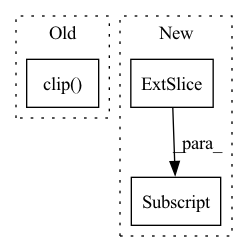

Pattern ID :39219
Before Change
cur_res = inpainted_image[0].permute(1, 2, 0).detach().cpu().numpy()
cur_res = cur_res[0:origin_height, 0:origin_width, :]
cur_res = np.clip( cur_res * 255, 0, 255) .astype("uint8")
cur_res = cv2.cvtColor(cur_res, cv2.COLOR_BGR2RGB)
return cur_res
After Change
crop_image, crop_box = self._run_box(image, mask, box)
crop_result.append((crop_image, crop_box))
image = (image.transpose(1, 2, 0) * 255).astype(np.uint8)[:, :, ::-1]
for crop_image, crop_box in crop_result:
x1, y1, x2, y2 = crop_box
image[y1:y2, x1:x2, :] = crop_image
return imageIn pattern: SUPERPATTERN
Frequency: 3
Non-data size: 3
Instances Fragment ID: 111407777
Project Name: sanster/lama-cleaner
Commit Name: 43c9c22c7312dd39feac4e3783e9ec080fd64243
Time: 2022-03-22
Author: cwq1913@gmail.com
File Name: lama_cleaner/lama/__init__.py
M Class Name: LaMa
N Class Name: LaMa
M Method Name: __call__(3)
N Method Name: __call__(3)
M Parent Class:
N Parent Class:
M File Name: lama_cleaner/lama/__init__.py
N File Name: lama_cleaner/lama/__init__.py
M Start Line: 40
M End Line: 55
N Start Line: 50
N End Line: 65
Before Change
def __getitem__(self, idx):
// select the starting offset for reading the file
offset = np.clip( self.examples[idx]["offset"] + np.random.randint(-20,20), a_min=0, a_max=None)
// use torchaudio to load them, which should be pretty fast
input, sr = torchaudio.load(self.examples[idx]["input"], num_frames=self.length, offset=offset, normalization=False)
target, sr = torchaudio.load(self.examples[idx]["target"], num_frames=self.length, offset=offset, normalization=False)After Change
audio_idx = self.examples[idx]["idx"]
offset = self.examples[idx]["offset"]
input = self.audio_files[audio_idx]["input"][:,offset:offset+self.length]
target = self.audio_files[audio_idx]["target"][:,offset:offset+self.length]
else:
offset = self.examples[idx]["offset"]
input, sr = torchaudio.load(self.examples[idx]["input"],
num_frames=self.length, Fragment ID: 111407774
Project Name: csteinmetz1/auraloss
Commit Name: d9325c5b528ff92d58dbbce240ac264790c1be29
Time: 2020-11-09
Author: csteinmetz1@gmail.com
File Name: examples/data.py
M Class Name: SignalTrainLA2ADataset
N Class Name: SignalTrainLA2ADataset
M Method Name: __getitem__(2)
N Method Name: __getitem__(2)
M Parent Class: torch.utils.data.Dataset
N Parent Class: torch.utils.data.Dataset
M File Name: examples/data.py
N File Name: examples/data.py
M Start Line: 115
M End Line: 127
N Start Line: 140
N End Line: 165
Before Change
img = self.synthesis_ema(ws, noise_mode=noise_mode)
img = (paddle.transpose(img, (0, 2, 3, 1)) * 127.5 + 128)
img = paddle.clip( img, 0, 255)
img = paddle.cast(img, dtype=paddle.uint8)
img_rgb = img.numpy()[0] // pgan是将RGB格式的图片进行保存的。
self.visual_items["reference"] = img_rgbAfter Change
img = img.clamp(0, 255)
img = img.to(torch.uint8)
img_rgb = img.cpu().detach().numpy()[0]
img_bgr = img_rgb[:, :, [2, 1, 0]]
return img_bgr
Fragment ID: 111407772
Project Name: miemie2013/miemiegan
Commit Name: c0604d858d8916f0f711432810ad1ec98036ca4b
Time: 2022-02-22
Author: 53960695+miemie2013@users.noreply.github.com
File Name: mmgan/models/architectures/styleganv2ada_model.py
M Class Name: StyleGANv2ADAModel
N Class Name: StyleGANv2ADAModel
M Method Name: test_iter(2)
N Method Name: test_iter(2)
M Parent Class: torch.nn.Module
N Parent Class: torch.nn.Module
M File Name: mmgan/models/architectures/styleganv2ada_model.py
N File Name: mmgan/models/architectures/styleganv2ada_model.py
M Start Line: 458
M End Line: 486
N Start Line: 474
N End Line: 481